← BACK TO WORK
PROJECT TYPE
Independent UX/UI Case Study
TIMELINE
June 2026
ROLE
UX Research · UX Design · UI Design
TOOLS
Figma · FigJam · Photoshop
DELIVERABLE
High-Fidelity Interactive Prototype
PLATFORM
Nintendo Switch Concept
Context
The Nintendo Switch has a distinctive interface built around
simplicity and getting players into their games quickly.
However, I saw opportunities to expand how players organise
larger digital libraries, discover new titles and access
information about their gaming activity.
I created this independent case study in June to add to my portfolio for my application
to Trinity College Dublin, in hopes to pursue an MSc to specialise in Product Design and UX, I then designed
this case study specifically to explore
how the Nintendo Switch 2 interface could evolve without
losing the familiarity that makes the console recognisable.
Using Figma, I developed a high-fidelity redesign focused
on navigation, personalisation and the overall player
experience. The project was a conceptual design exercise,
rather than an official Nintendo project or a coded
application.
UX/UI DESIGN
INTERFACE REDESIGN
FIGMA PROTOTYPING
The Problem
I wanted to explore how the console experience could become
more personal without making the interface unnecessarily
complicated. The existing home screen prioritises recently
played games and quick access, which keeps navigation
straightforward, but leaves less room for players who want
more control over how their libraries and profiles are
organised.
I was particularly interested in the gap between finding
and launching a game and everything surrounding that
experience: managing a growing collection, returning to
recently played titles, discovering something new and
understanding personal gaming activity.
Rather than adding features for the sake of it, I wanted
to consider how these tools could fit naturally into the
existing interface. The challenge was to introduce more
functionality while preserving Nintendo's approachable
visual identity and the speed of controller-based
navigation.
My design question: How might the Nintendo
Switch interface support a more personalised and organised
gaming experience without compromising its simplicity?
Research
I began by examining the existing Nintendo Switch interface
and identifying areas I wanted to explore further. I
considered its minimal home screen, game navigation and
overall visual hierarchy, alongside interface conventions
found in other console experiences. This helped me
distinguish the elements worth preserving from areas where
I felt a redesign could offer more flexibility.
I also collected visual references in an inspiration board
to explore different approaches to game artwork, information
density, colour and layout. This gave me a clearer direction
for developing an interface that felt more structured
without becoming visually overwhelming.
My analysis informed three main design priorities:
making game organisation more flexible, improving access
to relevant player information and creating clearer
pathways for discovering content. I used these priorities
to guide the screens and interactions I explored in Figma.
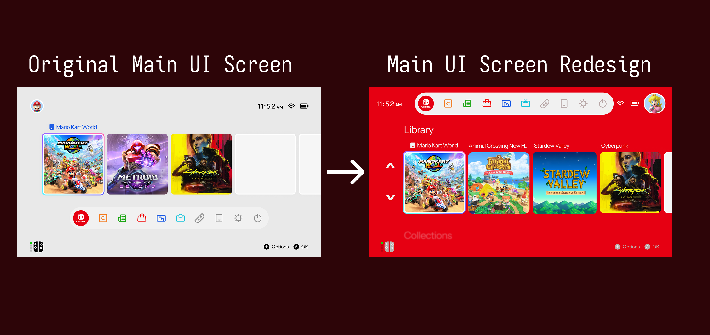
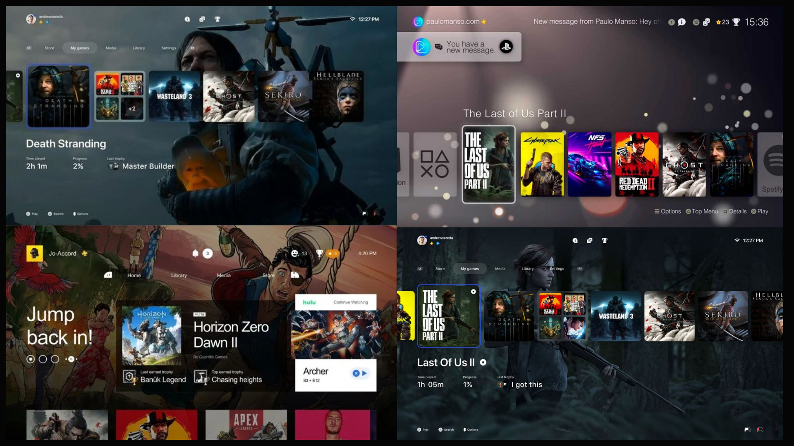
Solution
I designed a proposed Nintendo Switch 2 interface that
builds on the original console's familiar visual language
while exploring more flexible ways to navigate, organise
and personalise the gaming experience. I developed the
screens in Figma, using consistent layouts and reusable
interface elements across light and dark themes.
1. Jump Back In:
I introduced a more prominent resume-game area that
prioritises the player's current experience. Game artwork,
contextual information and a clear primary action help
make returning to a title feel more direct.
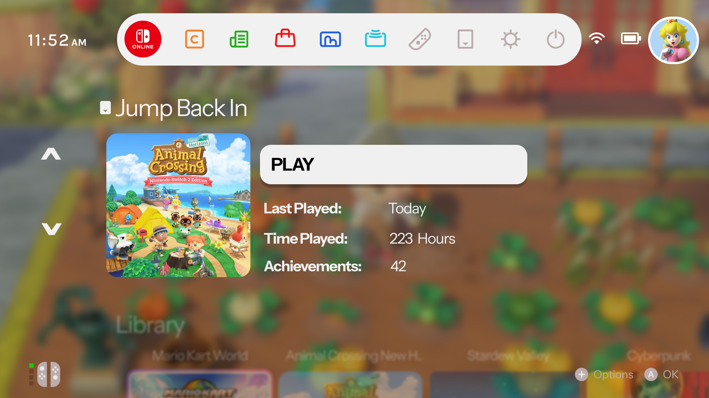
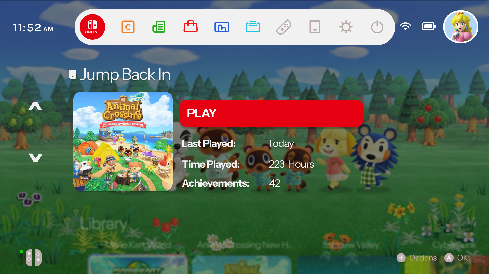
2. An Expanded Game Library:
I explored a more visual library layout to make browsing
a collection of games feel organised and engaging.
Clearer card layouts and focus indicators were designed
with controller navigation in mind, helping the selected
item remain easy to identify.
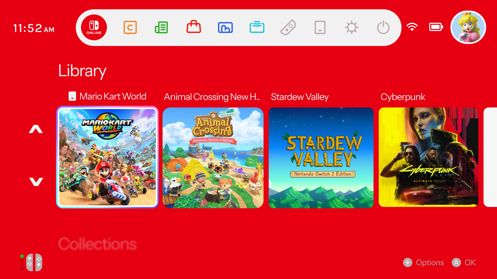
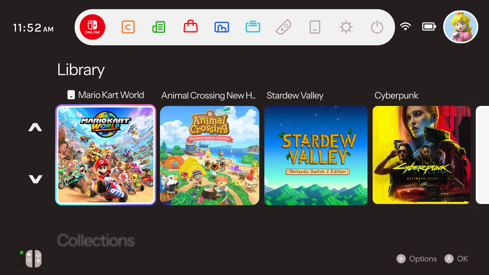
3. Personalised Collections:
I proposed custom collections that would let players group
games according to their own preferences. This gives
players an alternative to relying solely on a chronological
list when looking for something to play.
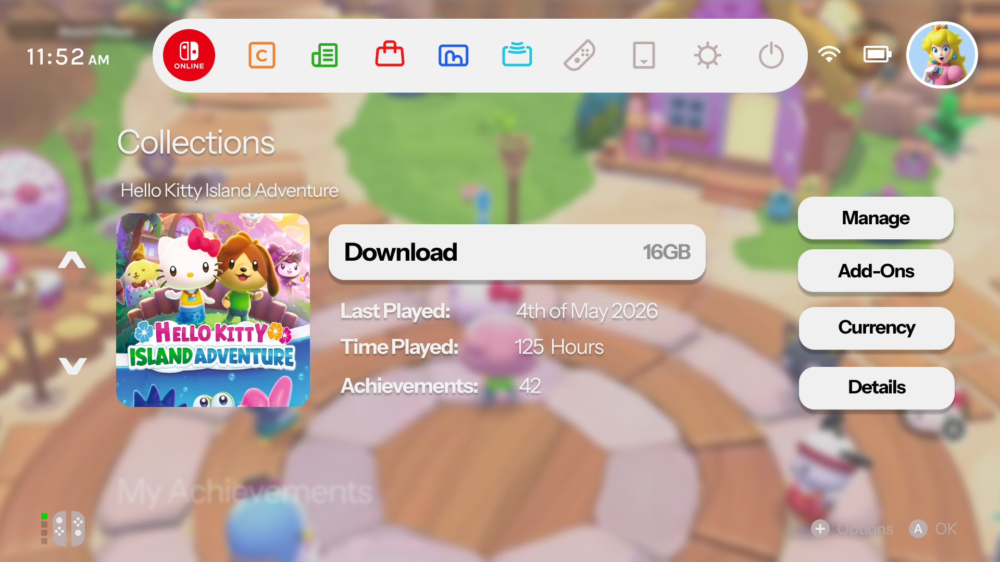
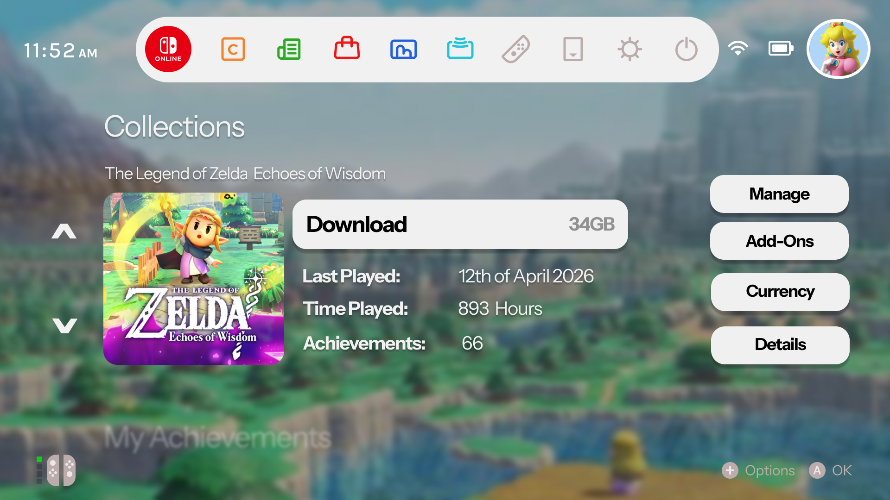
4. Discovery and Recommendations:
I explored how recommended titles, upcoming releases and
curated content could sit within the wider console
experience. The aim was to make discovering games feel
more integrated, while keeping the main navigation
focused on the player's existing library.
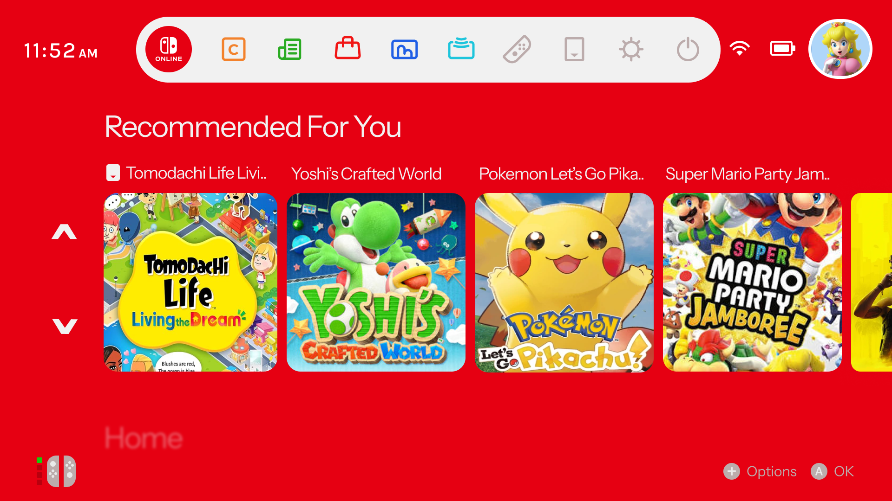
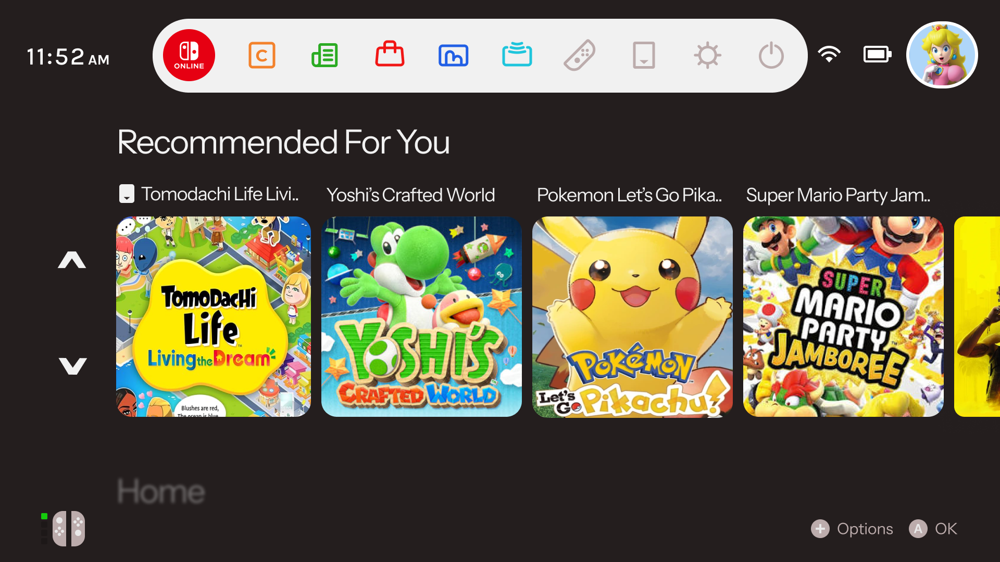
5. A Centralised Player Profile:
I redesigned the profile area as a central place to
explore player statistics, account information and
customisation options. This brought information that
could otherwise feel separate into a more cohesive
dashboard concept.
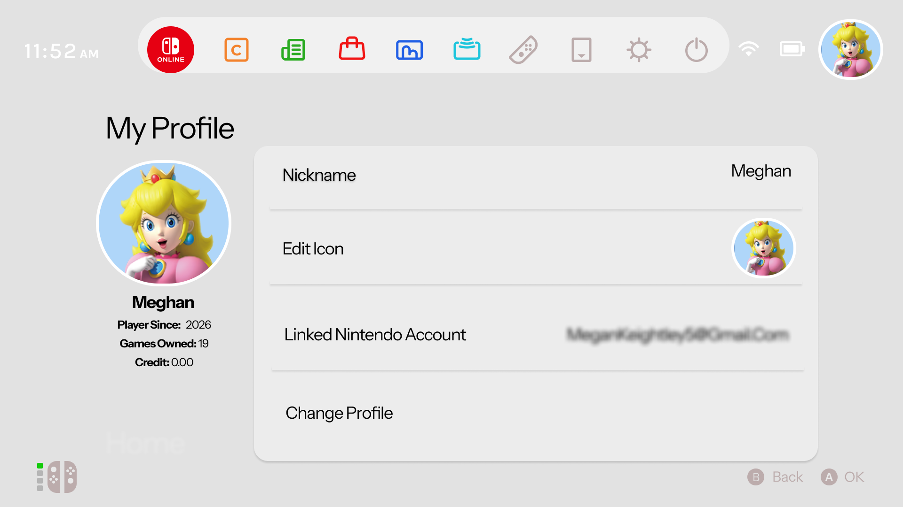
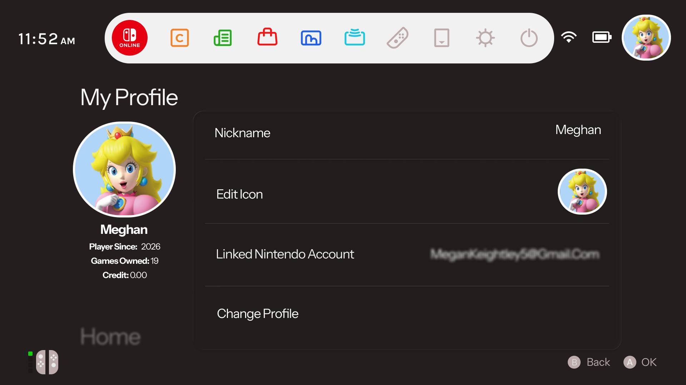
Across these screens, I explored light and dark themes,
consistent spacing, visual hierarchy and controller
focus states. My aim was to make the proposed additions
feel like part of one interface system, rather than
disconnected features added onto the existing console.
Interactive Figma Prototype
The prototype brings the main screens together so the
proposed navigation and interface states can be explored
interactively. It demonstrates the direction I would
take the experience, rather than a working console
implementation.
ß
Reflection
This project gave me the opportunity to look at a familiar
digital product from a design perspective and question
how its interface could evolve. I learned to think beyond
individual screens and consider how navigation,
information hierarchy and visual consistency work
together across a wider system.
If I developed the project further, I would validate the
proposed features with Nintendo Switch users through
usability testing. I would want to understand whether
custom collections and additional profile information
genuinely improve navigation, or whether they introduce
unnecessary complexity. I would also test controller
focus behaviour and accessibility, particularly text
legibility, contrast and consistency across themes.
The outcome is a high-fidelity design concept rather than
a tested or implemented product. Although I did not build
the interface in code, the project strengthened my ability
to analyse an existing experience, develop a visual
direction and communicate proposed improvements through
an interactive prototype. It also reinforced the
importance of treating new features as design decisions
that need to justify their place in the user experience.